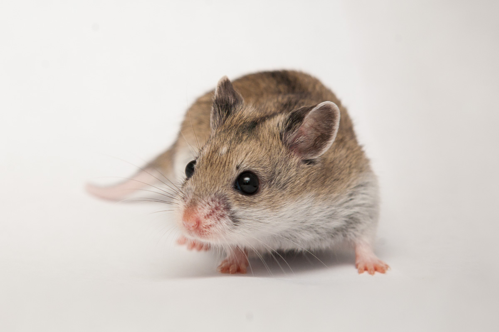

Хомяки. Виды хомяков. Как за ними ухаживать
- Хомяки обыкновенные

- Джунгарские (джунгарики)

- Сирийские

- Китайские

- Кэмпбелл

- Хомяки Робковского

Важно! При выборе нового члена семьи учитывайте особенности каждой породы, ведь питомец проживет с вами не один год.